Lab 2 - DonationWeb 2.0 (Express & Node App Continued)
In this lab we will be using our WebStorm IDE to build a simple Node/Express Server to initially act as a Web Service APi which we will test manually, and eventually it will be our back-end to a full MEAN Stack Web App.
Objectives
In this Lab, you will be required to build the first version of our Donation Case Study Web App, called DonationWeb 2.0. We will scaffold the app similar to Lab 1, so if you're still a bit unsure of this process, maybe have a go at it again?
On completion of this lab you'll be able to
- create a simple NodeJS app using express
- run this app as a NodeJS Server and process client requests
- be able to use npm to install dependency modules
- be able to implement a simple Web APi
In this version we will be implementing a simple RESTful APi with the following routes
- GET /donations - return a list of donations and associated metadata
- GET /donations/:id - return an individual donation with associated metadata
- POST /donations - create a new donation
- PUT /donations/:id/upvote - upvote a donation, notice we use the donation ID in the URI
- DELETE /donations/:id - delete a donation by its ID
Step 2 - Project Setup
We're going to build our first Node/Express DonationWeb project, so (assuming you already have it installed) launch your WebStorm IDE and create a new Node/Express Project as follows:
(Just for reference, you'll probably see the list of projects previously opened, like below)
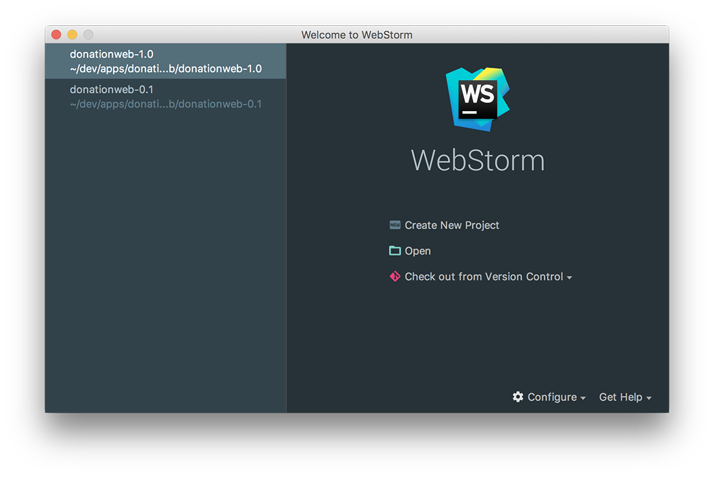
Select 'Create New Project' and you should get something like this:
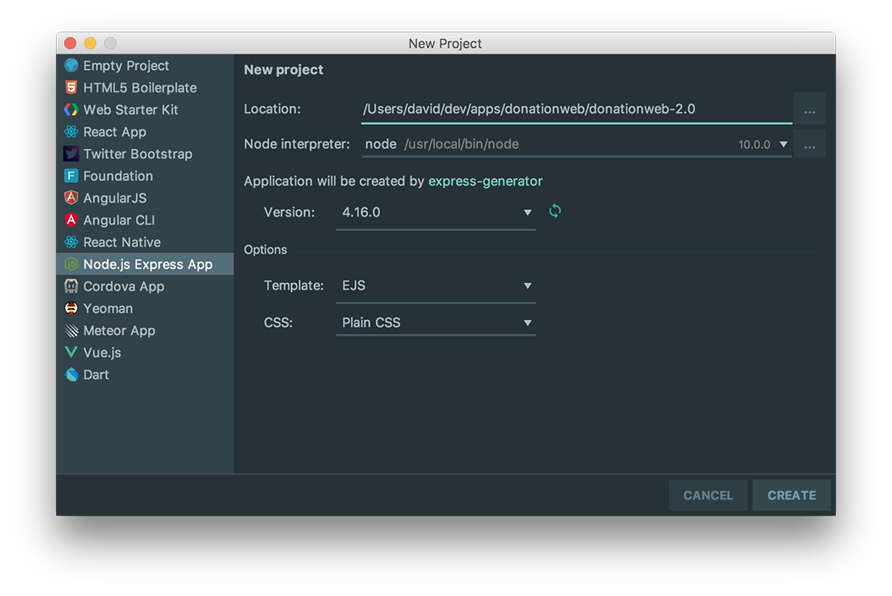
Select a 'Node.js Express App' and browse to the location you want to store your project files. It's probably a good idea to store all your web apps in a single folder (as we did in Lab 01) so go ahead and name your project donationweb-2.0 (as above).
Make sue you choose EJS again as the templating option (like before)
Your project should now look like this
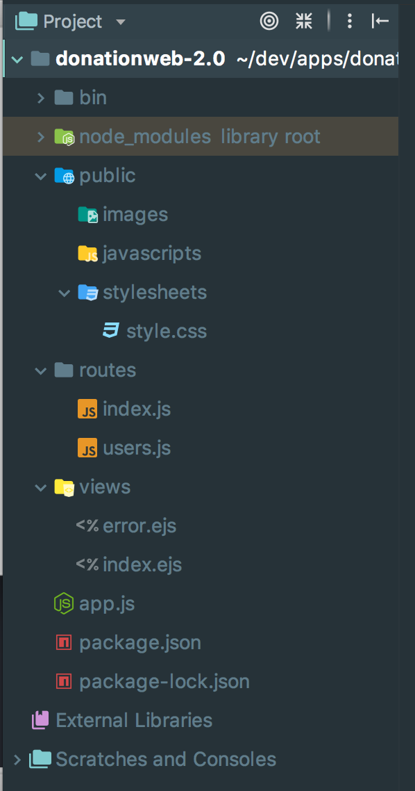
Open up your index.js, and like we did in Lab 01, change the 'title' of our Project (as below)
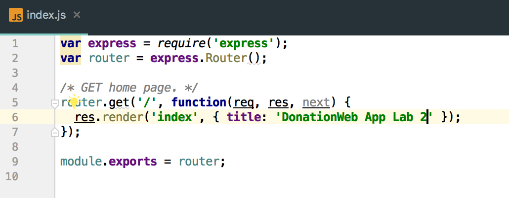
and once again, click on the 'play' button to run/launch your Web App..
If you've followed all the steps correctly you should be able to run your app (or visit http://localhost:3000) and see something like the following:
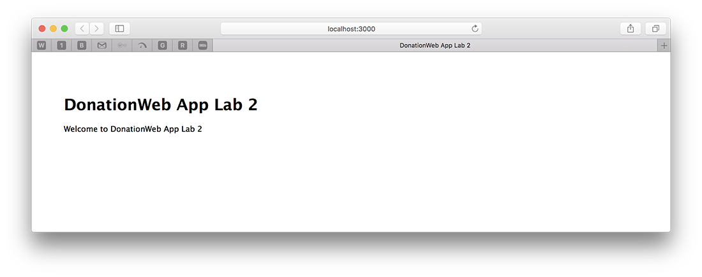
Now, if you'd rather your browser launch automatically you can configure you 'Run' options and choose the Browser you prefer
Just be sure to 'tick' the 'After Launch' check box
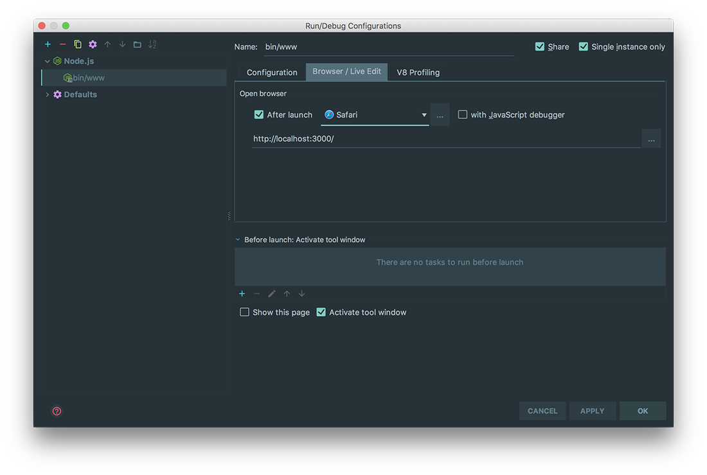
Close the browser tab/window and run your app again, to confirm your new run configuration is correct.
The next few steps will involve implementing some of our RESTful APi and some WebStorm configuration changes.
Step 3 - Creating our 'Model'
Before we can think about accessing data on our Server via a RESTful APi, we first need the actual data :) , so this step will involve creating a list of 'Donations' that we can 'expose' via our APi.
The first thing we need to do is create a new directory in our root directory called models/
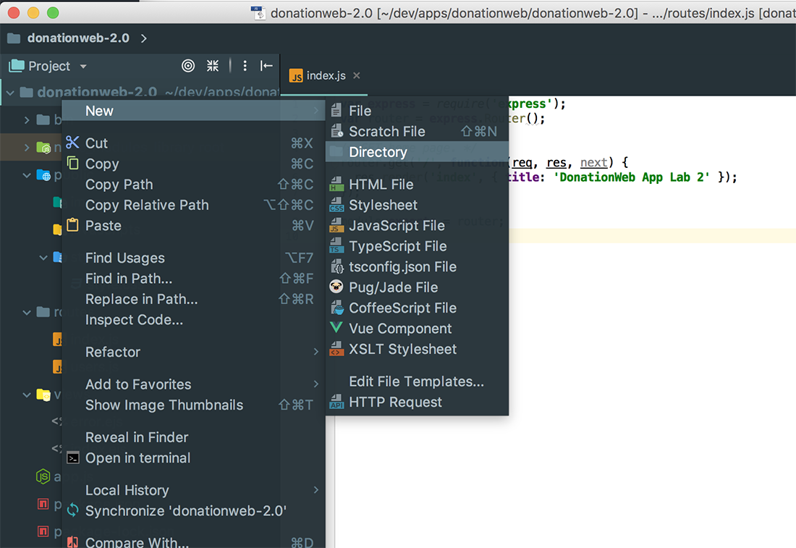
and then
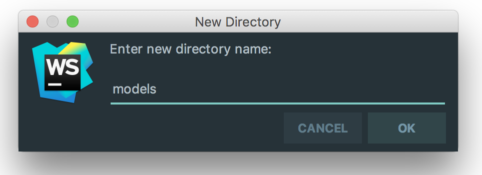
and within that directory create a new file called donations.js.
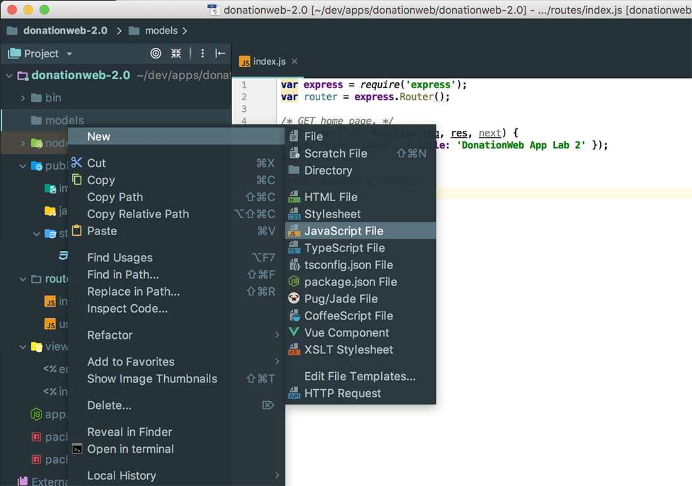
and

Now, paste the following code into your newly created donations.js file
const donations = [
{id: 1000000, paymenttype: 'PayPal', amount: 1600, upvotes: 1},
{id: 1000001, paymenttype: 'Direct', amount: 1100, upvotes: 2},
{id: 1000002, paymenttype: 'Visa', amount: 1000, upvotes: 1}
];
module.exports = donations;Notice the field (id) in our model, this will be useful later on for deleting etc.
Your project should now look something like this
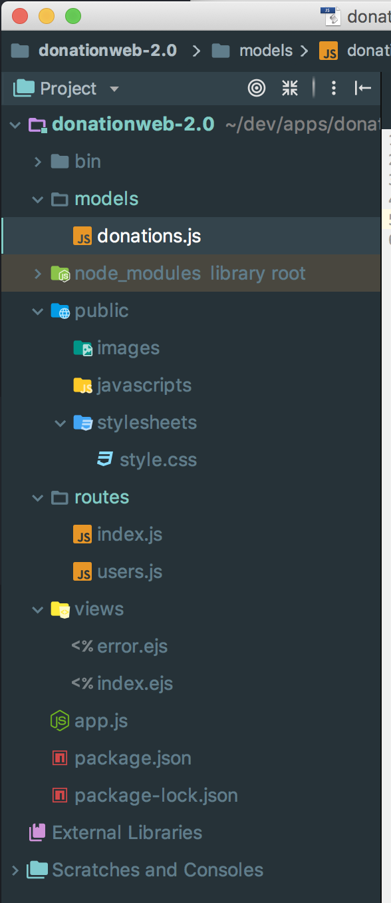
Step 4 - Adding our 'Routes', Part 1 ( 'findAll' & 'findOne')
With our "backend" model in place, it's now time to open some routes that a client can interact with. The following are a list of actions a user can perform:
- view all donations
- Find a single donation
- Add a new donation
- Upvote a donation
- Delete a donation
The actions map directly to several routes, which are described as follows:
- GET /donations - return a list of donations and associated metadata
- GET /donations/:id - return an individual donation with associated metadata
- POST /donations - create a new donation
- PUT /donations/:id/upvote - upvote a donation, notice we use the donation ID in the URL
- DELETE /donations/:id - delete a donation by ID
Before we proceed, WebStorm has a very nice (and useful!) feature to assist the developer in writing javascript - Code Assistance, which happens to be disabled by default, so we need to turn it on, as follows;
File->Default Settings
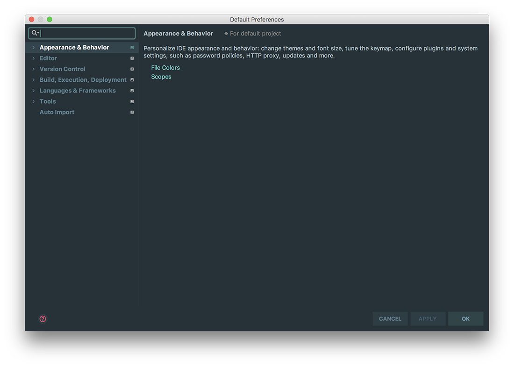
Languages & Frameworks->Node.js & NPM
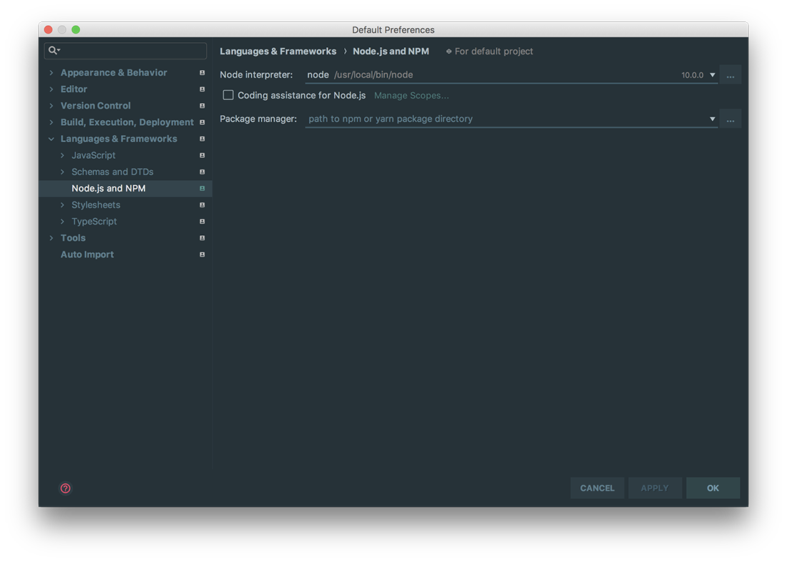
Enable Node.js Core Library
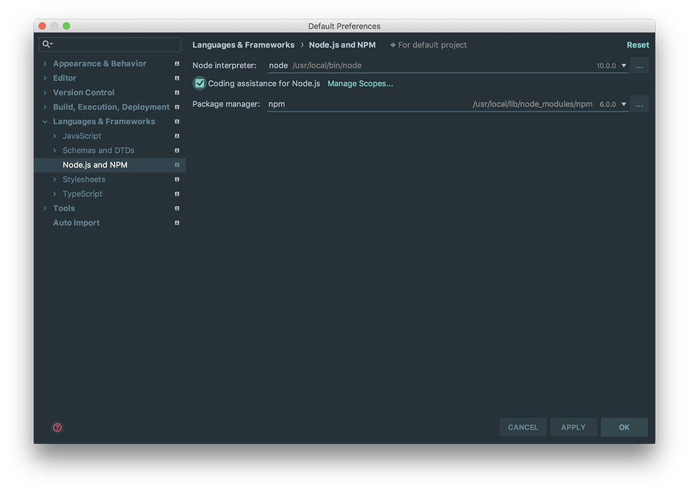
I'd also update the package manager to NPM if it'd not already selected.
Creating Our First Route - 'List All Donations'
To keep things organised we will be defining these routes in a routes/donations.js file, so create a new file 'donations.js' in the existing 'routes' folder in your project.
Let's begin by opening up the first route we listed, which should return a JSON list containing all donations. We start by creating a function (findAll) for retrieving donations in our routes/donations.js file.
let donations = require('../models/donations');
let express = require('express');
let router = express.Router();
router.findAll = (req, res) => {
// Return a JSON representation of our list
res.json(donations);
}
module.exports = router;We make sure we import express and have a handle to our donations model. By right, we should have some error handling in there, but we'll be optimistic!
Next, inside our app.js we need to define the actual route which will trigger the above function so add the following around line 26/27 to add the actual GET APi route.
(there'll be other, similar, routes around that line so just add it after those but BEFORE the error handling).
app.get('/donations', donations.findAll);Now, try and run your app and see what happens....
You probably got something like this
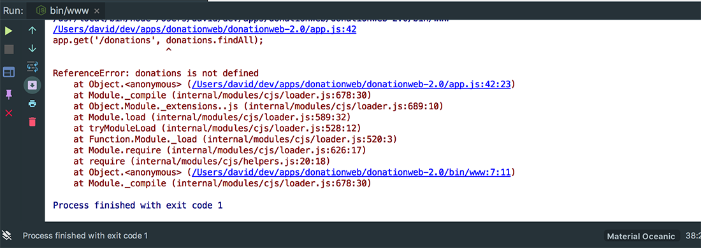
We're trying to call a function 'findAll' on an object (donations) that the js interpreter can't find.
Ordinarily, we'd have to manually add in the javascript we need, but we can get WebStorm to do this for us - first, just move your mouse over the error to get some extra info
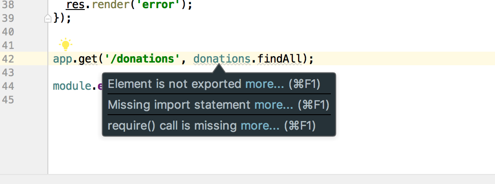
Now highlight the error and hit Alt+Enter (on a Mac) and you get the following;
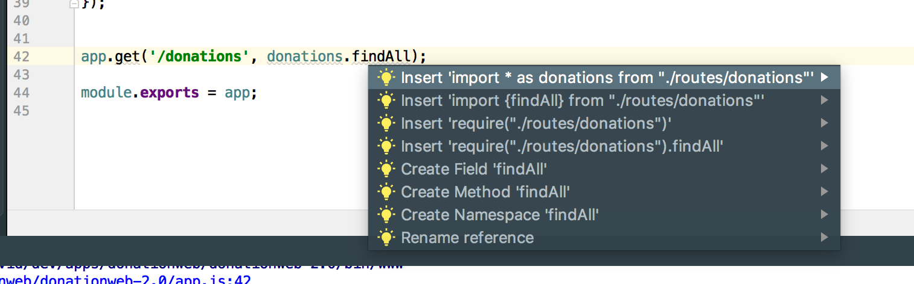
Choose the correct 'fix' and the necessary 'requires' statement is added to our js file - kinda handy don't you think?!
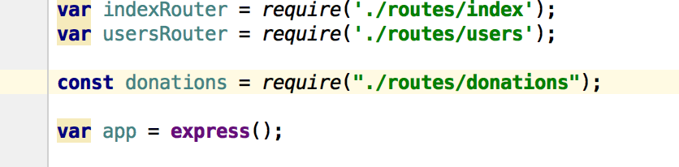
Now, to actually test our APi we need to launch our Server again and point the browser at http://localhost:3000/donations and we should get back a json string of our data, like so.
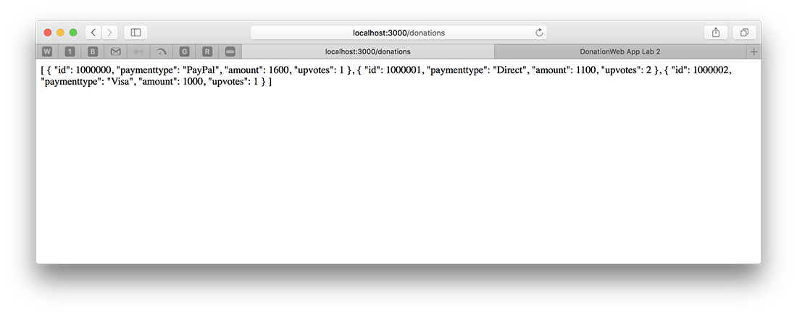
Now, to display our JSON in a more readable format we can update our response HEADERS and 'stringify' the json, like so
res.setHeader('Content-Type', 'application/json');
res.send(JSON.stringify(donations,null,5));and if we run the app again we get
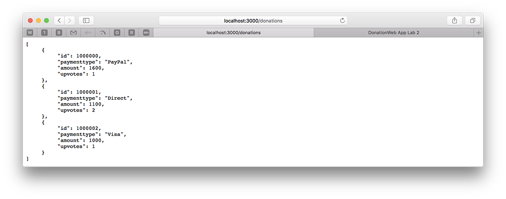
Over time, this would probably become a bit time consuming, but WebStorm to the rescue again :) there's a feature to Test RESTful Web Service, so launch that like so
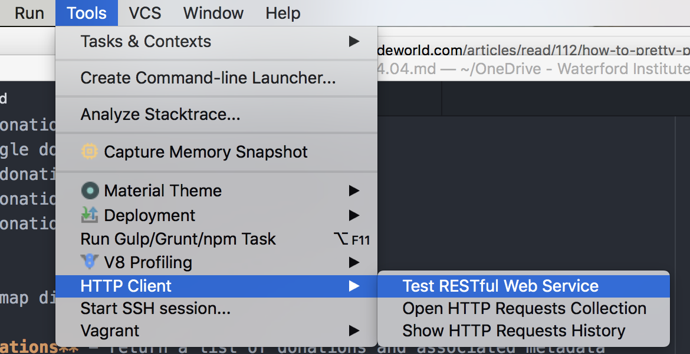
or
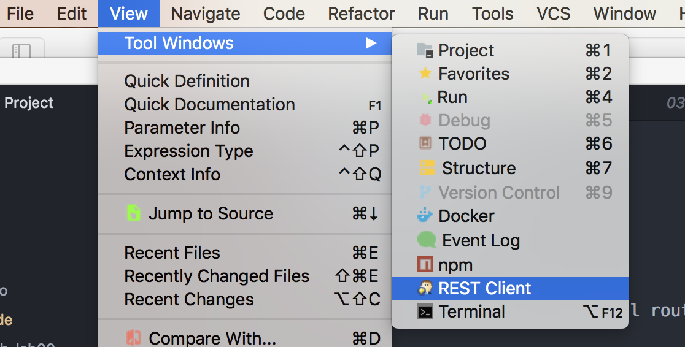
and you get the REST Client window, so select/type in the following for our test request
- HTTP Method GET
- Host/port http://localhost:3000
- Path /donations
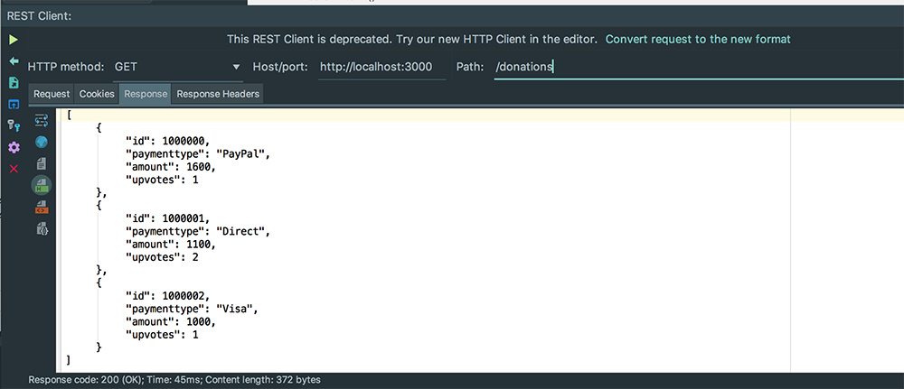
On the 'Request' tab, update the 'Accept' Header application/json
If everything goes according to plan, you'll see the same json list of donations in the Response.
You could continue to use the browser to test the APi, but things will get a bit tricky when we want to test our add & update requests so we'll stick with the REST Client for the moment.
Creating Our Second Route - 'findOne'
Our first route returned all the donations to a client, but what if the client only wants to get at a single donation - that's what our next route 'findOne' will do.
First, add a 'helper' function (which might look a bit familiar from previous labs)
function getByValue(array, id) {
var result = array.filter(function(obj){return obj.id == id;} );
return result ? result[0] : null; // or undefined
}and here's the function stub (findOne) to be added to our routes/donations.js file
router.findOne = (req, res) => {
// Create a donation variable and use the helper function
// to find
// req.params.id
// in our donations array
// Then either return the found donation
// or a suitable error message
}You'll then need to add the route to your app.js
HTTP REQUEST = GET
ROUTE PATH = '/donations/:id'so go ahead and have a go at that (very similar to 'findAll').
Also, just for completeness, you should format the json response again.
Testing Our 'findOne' Route
Now that we have another GET 'service' in our RESTful APi, we should really test it via our REST Client.
The Request
GETing donation with id '1000001'
/donations/1000001The Response
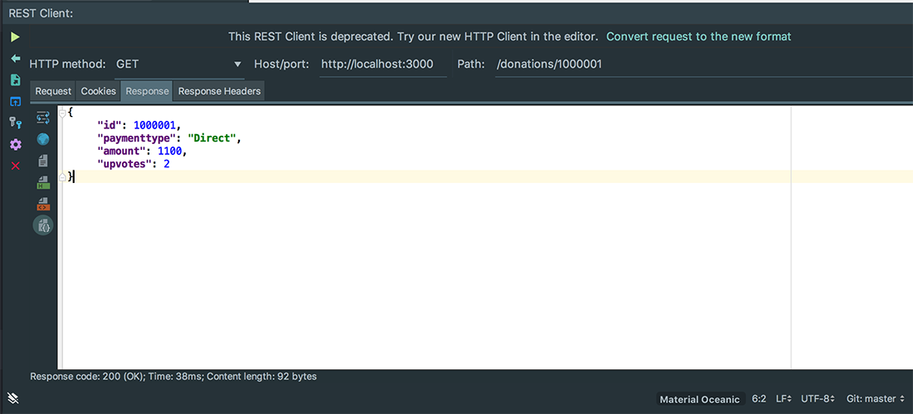
Requesting donation with id '10000011'
/donations/10000011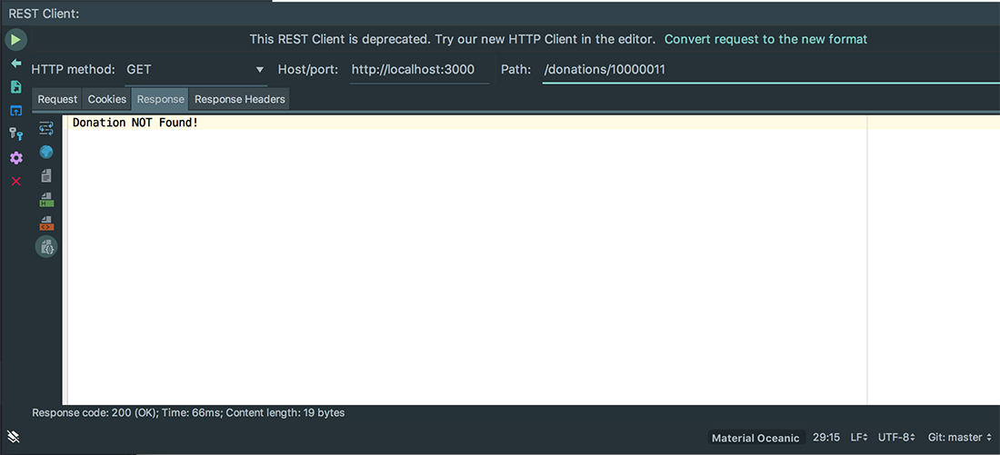
Step 5 - Adding our 'Routes', Part 2 ('addDonation' & 'incrementUpvotes')
Before we go any further, recall our routes, described as follows:
- GET /donations - return a list of donations and associated metadata
- GET /donations/:id - return an individual donation with associated metadata
- POST /donations - create a new donation
- PUT /donations/:id/upvote - upvote a donation, notice we use the donation ID in the URL
- DELETE /donations/:id - delete a donation by ID
We've already implemented the first two, so now let's have a go at
- Adding a new donation and 'Upvoting' a donation - we'll leave deleting a donation until the last step
Creating Our 'Add' Route - 'addDonation'
Similar to the previous step, we start by creating a function (addDonation) for adding a single donation in our routes/donations.js file
router.addDonation = (req, res) => {
//Add a new donation to our list
var id = Math.floor((Math.random() * 1000000) + 1); //Randomly generate an id
// parameters to store
// id (for id)
// req.body.paymenttype (for paymenttype)
// req.body.amount (for amount)
// 0 (for upvotes)
var currentSize = donations.length;
donations.push(/*add the relevant code here*/);
if((currentSize + 1) == donations.length)
res.json({ message: 'Donation Added!'});
else
res.json({ message: 'Donation NOT Added!'});
}Notice we only return a json message confirming (or Not) we've added the donation.
Next, inside our app.js we need to define the actual route which will trigger the above function so keeping in mind the route is /donations with a POST request, see can you make the necessary additions?
Testing Our 'Add' Route
Now that we have a POST 'service' in our RESTful APi, let's test it via our REST Client.
First, confirm what is currently in the list
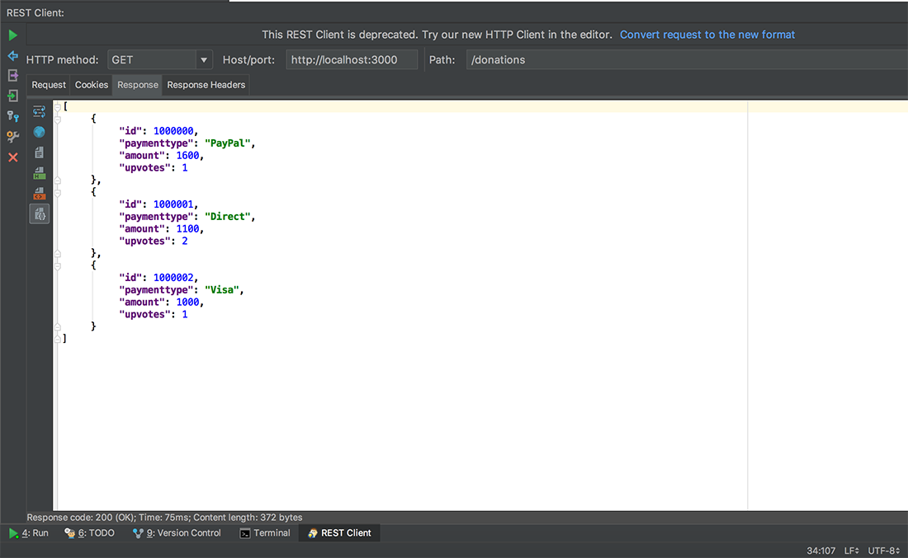
The Request
We need to fill in the Request Body for our POST
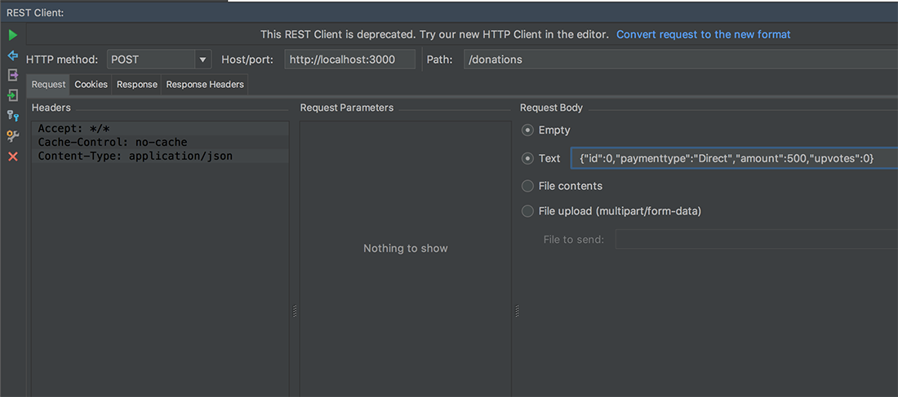
POSTing donation data in JSON format
{"id":0,"paymenttype":"Direct","amount":500,"upvotes":0}The Response
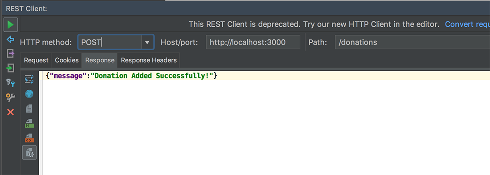
GET all donations again to confirm
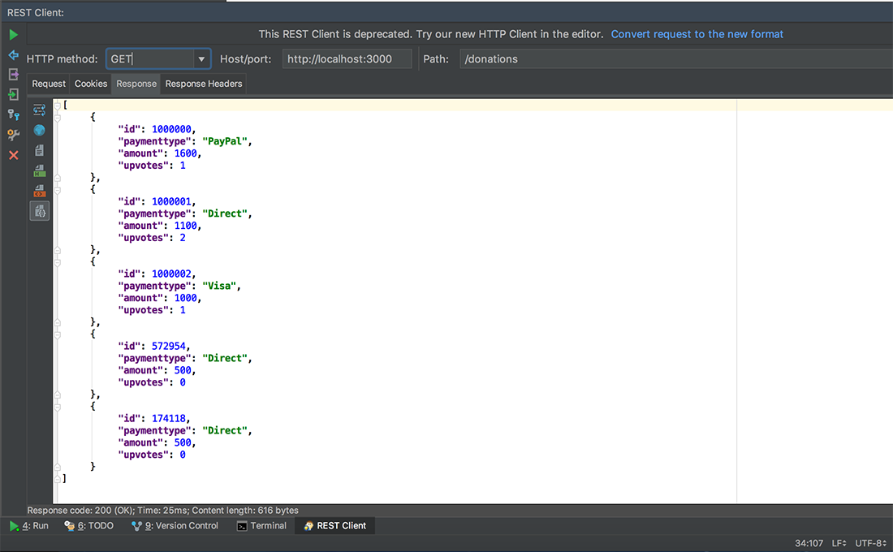
Creating Our 'Upvote' Route - 'incrementVotes'
Here's what we need to implement the 'Upvote' route
routes/donations.js
router.incrementUpvotes = (req, res) => {
// Find the relevant donation based on params id passed in
// Add 1 to upvotes property of the selected donation based on its id
var donation = getByValue(donations,req.params.id);
donation.upvotes += 1;
}And again, in your app.js you need to add the correct 'route' to trigger the function, so, assuming we use /vote, have a go at writing the correct call.
Testing Our 'Upvote' Route
First, retrieve a single donation (1000001 here) to confirm what is the current upvotes value
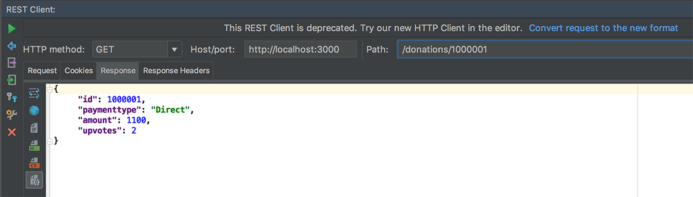
Now that we have a PUT 'service' in our RESTful APi, let's test it via our REST Client.
The Request
UPDATEing donation votes with id '1000001'
/donations/100001/votes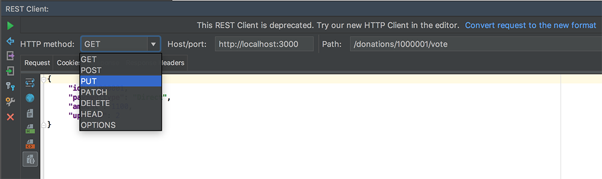
The Response (from another GET)
as an exercise, have a go at returning the following on a successful 'upvote'
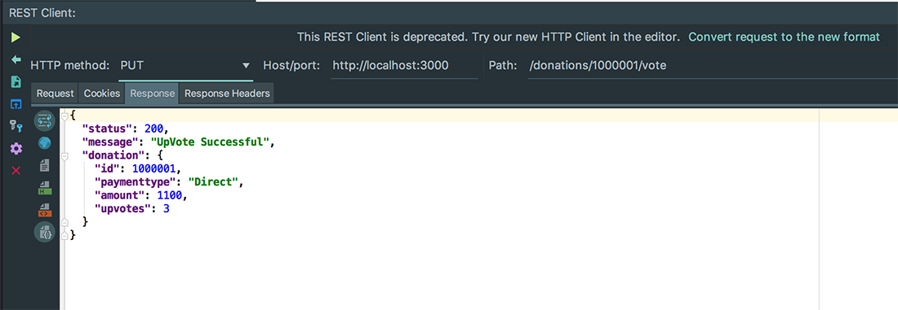
Step 5 - Adding our 'Routes', Part 3 ('deleteDonation')
Creating Our 'Delete' Route - 'deleteDonation'
Again, we start with the function in our routes/donations.js file
router.deleteDonation = (req, res) => {
//Delete the selected donation based on its id
// First, find the relevant donation to delete
// Next, find it's position in the list of donations
// Then use donations.splice(index, 1) to remove it from the list
// Return a message to reflect success or failure of delete operation
}and update our app.js accordingly
app.delete(ROUTE, FUNCTION);Testing Our 'Delete' Route
Now that we have a DELETE 'service' in our RESTful APi, let's test it via our REST Client.
The Request
DELETEing donation with id '1000001'
/donations/1000001
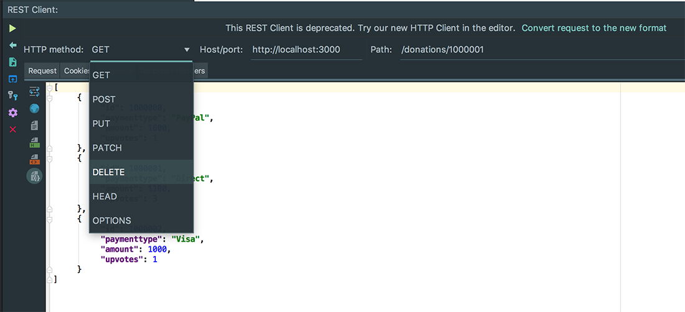
The Response
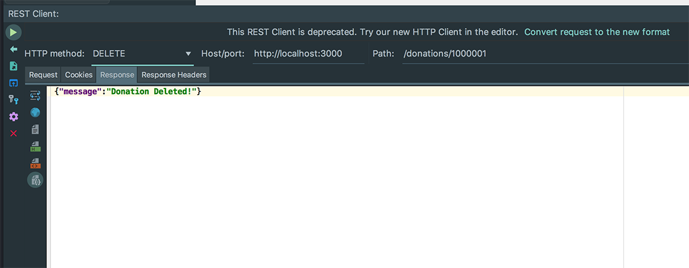
A quick GET all to confirm the deletion
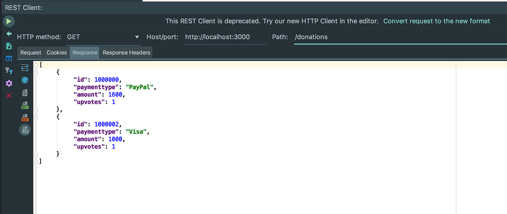
As a final exercise, have a go at returning the total number of upvotes for all the donations.
To get you started you can use this function to essentially 'sum up' all the votes for all the donations in the list
function getTotalVotes(array) {
let totalVotes = 0;
array.forEach(function(obj) { totalVotes += obj.upvotes; });
return totalVotes;
}and assume our route will be
/donations/voteswhich returns, for example
{
totalvotes : 8
}All Done!
Solution - Lab 2
You can find the solution to this lab here